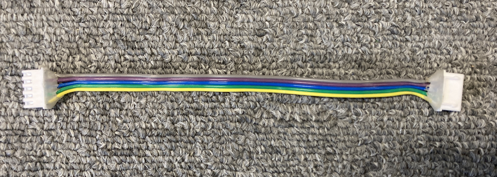
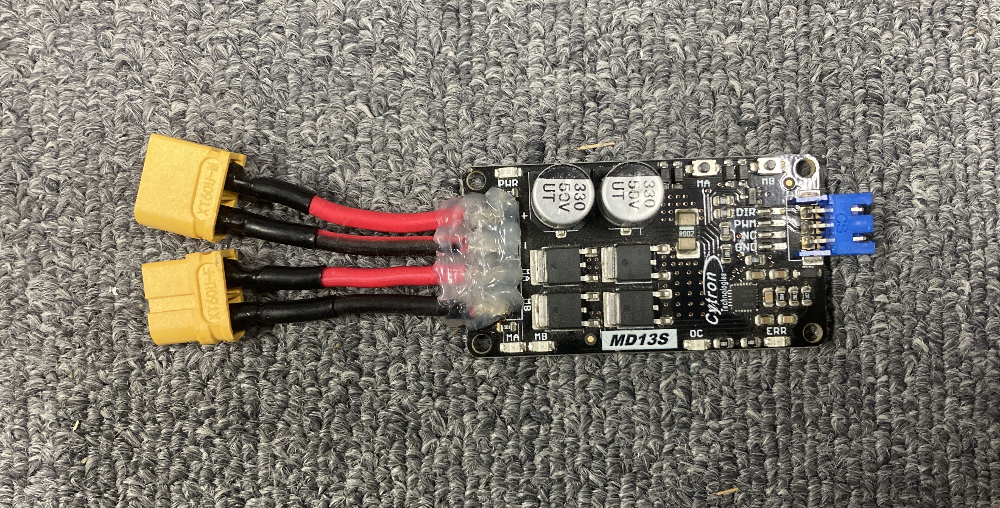

DC モーター
🌟 概要
直流電源を供給することで回転します。モータードライバを介して制御します。
🌟 配線
マブチ 385 モータの場合の配線図です。モーターによって定格電圧が異なるので、適切な電圧を供給してください。この場合は 24V です。
定格電圧はモーターの仕様書を参照してください。マブチモーターの場合は こちら



DIR 線と PWM 線の 2 線のタイプです。あまり使わないので配線図は割愛します。


🌟 ファームウエア / 制御線 3 線
ピン番号は基板上に記載されています。
🌟 ファームウエア / 制御線 2 線
🌟 実際のコード例
メインマイコンから CAN で出力値を受信し、サブマイコンでモーターを制御する例です。
一つのモーターにつき、一つの CNA ID を割り当てて制御します。
サブマイコン側 (Raspberry Pi Pico)
#include <Udon.hpp>
/// @brief CAN メッセージを受信し、モーターを制御するクラス
/// @note 一つのインスタンスで一つのモーターを制御します
class CanMotorReader
{
Udon::CanReader<Udon::Message::Motor> canReader;
Udon::Motor3 motor;
public:
CanMotorReader(Udon::CanReader<Udon::Message::Motor>&& canReader, Udon::Motor3&& motor)
: canReader{ std::move(canReader) }
, motor{ std::move(motor) }
{
}
void begin()
{
motor.begin();
}
void update()
{
if (const auto message = canReader.getMessage())
{
motor.move(message->speed); // データを受信し、モーターの出力値を設定
}
else
{
motor.stop();
}
}
};
// CAN バス
static Udon::CanBusSpi bus;
// モーター4台
static CanMotorReader motors[] {
CanMotorReader{
Udon::CanReader<Udon::Message::Motor>{ bus, 0x001 },
Udon::Motor3{ 0, 2, 1 }
},
CanMotorReader{
Udon::CanReader<Udon::Message::Motor>{ bus, 0x002 },
Udon::Motor3{ 3, 5, 4 }
},
CanMotorReader{
Udon::CanReader<Udon::Message::Motor>{ bus, 0x003 },
Udon::Motor3{ 6, 8, 7 }
},
CanMotorReader{
Udon::CanReader<Udon::Message::Motor>{ bus, 0x004 },
Udon::Motor3{ 9, 11, 10 }
},
};
// ループ周期を一定に制御するクラス
static Udon::LoopCycleController loopCtrl{ 10000 };
void setup()
{
bus.begin();
for (auto& motor : motors)
{
motor.begin();
}
}
void loop()
{
bus.update();
for (auto& motor : motors)
{
motor.update();
}
loopCtrl.update();
}
メインマイコン側 (Teensy4.0)
#include <Udon.hpp>
/// @brief CAN メッセージを送信し、モーターを制御するクラス
class CanMotorWriter
{
Udon::CanWriter<Udon::Message::Motor> canWriter;
public:
CanMotorWriter(Udon::CanWriter<Udon::Message::Motor>&& canWriter)
: canWriter{ std::move(canWriter) }
{
}
void move(int16_t power)
{
canWriter.setMessage({ power });
}
void stop()
{
move(0);
}
};
// CAN バス
static Udon::CanBusTeensy<CAN1> bus;
// モーター4台
static CanMotorWriter motors[] {
CanMotorWriter{{ bus, 0x001 }},
CanMotorWriter{{ bus, 0x002 }},
CanMotorWriter{{ bus, 0x003 }},
CanMotorWriter{{ bus, 0x004 }},
};
// ループ周期を一定に制御するクラス
static Udon::LoopCycleController loopCtrl{ 10000 };
void setup()
{
bus.begin();
}
void loop()
{
bus.update();
motors[0].move(100);
motors[1].move(200);
motors[2].move(-100);
motors[3].move(-200);
loopCtrl.update();
}